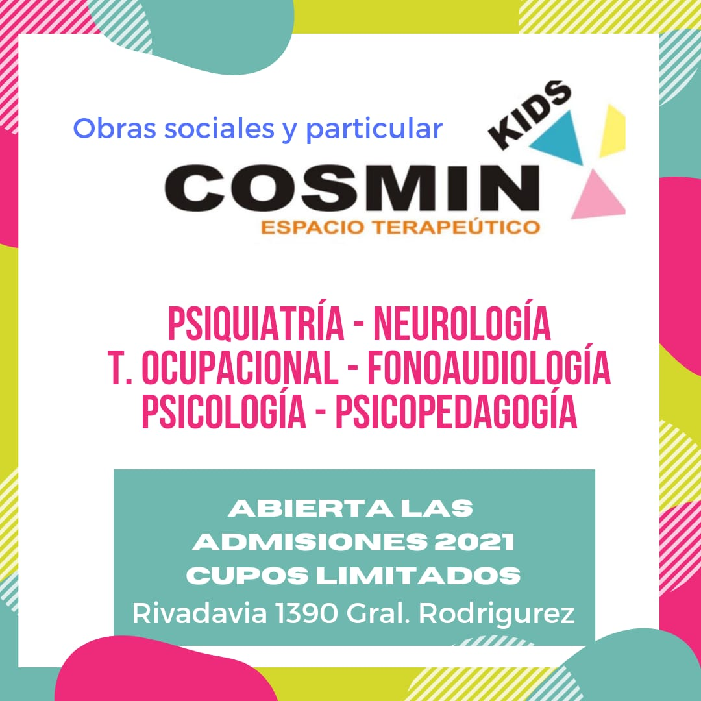

Sobre COSMIN
COSMIN es un Centro Integral de Psiquiatría, Fonoudiología, Terapia Ocupacional, Psicología y Neurología integrado por un grupo de profesionales de excelente formación y reconocida trayectoria.
El Centro esta compuesto por diferentes áreas de tratamiento que trabajan en forma conjunta, a través de la interconsulta constante y la interacción diaria.
Es un Centro asistencial, de Investigación y Consultoría, que privilegia tanto la excelencia en la atención, como la individualidad y la especificidad de cada caso en particular.
Implementamos diversos abordajes y metodologías, con la intención de brindar un servicio a la medida de cada necesidad.
Poseemos una estructura edilicia diseñada especialmente para tal fin, en un ambiente cálido y confortable. COSMIN cuenta además, en la Zona Oeste del Gran Buenos Aires, con una red periférica de profesionales que atienden en sus consultorios.
